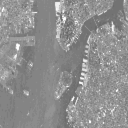
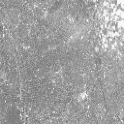

A view object represents a rectangular area in which graphics objects are drawn. It is a container for objects of the IDLgrModel class.
See IDLgrView::Init .
Objects of this class have the following properties. See IDLgrView Properties for details on individual properties.
In addition, objects of this class inherit the properties of all superclasses of this class.
This class has the following methods:
In addition, this class inherits the methods of its superclasses (if any).
In Object Graphics, the VIEWPLANE_RECT keyword is used to change the view object. The entire image is still contained within the image object, but the view is changed to pan over specific areas of the image object.
The following example imports a grayscale image from the nyny.dat binary file. This grayscale image is an aerial view of New York City. The image contains byte data values and is 768 pixels by 512 pixels. The VIEWPLANE_RECT keyword to the view object is updated to zoom in on the lower left corner of the image. Then the VIEWPLANE_RECT keyword is used to pan over the bottom edge of the image. Complete the following steps for a detailed description of the process.
Example Code:
See
panning_object.
pro
in the
examples/doc/objects
subdirectory of the IDL installation directory for code that duplicates this example. Run the example procedure by entering
panning_object
at the IDL command prompt or view the file in an IDL Editor window by entering
.EDIT panning_object.pro
.
| 1. | Determine the path to the nyny.dat file: |
file = FILEPATH('nyny.dat', $
SUBDIRECTORY = ['examples', 'data'])
| 2. | Initialize the image size parameter: |
imageSize = [768, 512]
| 3. | Import the image from the file: |
image = READ_BINARY(file, DATA_DIMS = imageSize)
| 4. | Resize this large image to entirely display it on the screen: |
imageSize = [256, 256]
image = CONGRID(image, imageSize[0], imageSize[1])
| 5. | Initialize the display objects: |
oWindow = OBJ_NEW('IDLgrWindow', RETAIN = 2, $
DIMENSIONS = imageSize, $
TITLE = 'A Grayscale Image')
oView = OBJ_NEW('IDLgrView', $
VIEWPLANE_RECT = [0., 0., imageSize])
oModel = OBJ_NEW('IDLgrModel')
| 6. | Initialize the image object: |
oImage = OBJ_NEW('IDLgrImage', image, /GREYSCALE)
| 7. | Add the image object to the model, which is added to the view, then display the view in the window: |
oModel -> Add, oImage
oView -> Add, oModel
oWindow -> Draw, oView
The following figure shows the resulting grayscale image display.
|
|
| 8. | Initialize another window: |
oWindow = OBJ_NEW('IDLgrWindow', RETAIN = 2, $
DIMENSIONS = imageSize, TITLE = 'Panning Enlarged Image')
| 9. | Change the view to zoom into the lower left quarter of the image: |
viewplane = [0., 0., imageSize/2]
oView -> SetProperty, $
VIEWPLANE_RECT = [0., 0., imageSize/2]
The view object still contains the entire image object, but the region displayed by the view (the viewplane rectangle) is reduced in size by half in both directions. Since the window object remains the same size, the view region is enlarged to fit it to the window.
| 10. | Display the updated view in the new window: |
oWindow -> Draw, oView
The following figure shows the resulting enlarged image area.
|
 |
| 11. | Pan the view from the left side of the image to the right side of the image: |
FOR i = 0, ((imageSize[0]/2) - 1) DO BEGIN & $
viewplane = viewplane + [1., 0., 0., 0.] & $
oView -> SetProperty, VIEWPLANE_RECT = viewplane & $
oWindow -> Draw, oView & $
ENDFOR
The & after BEGIN and the $ allow you to use the FOR/DO loop at the IDL command line. These & and $ symbols are not required when the FOR/DO loop in placed in an IDL program as shown in Panning_Object.pro in the examples/doc/objects subdirectory of the IDL installation directory.
The following figure shows the resulting enlarged image area panned to the right side.
|
 |
| 12. | Clean up the object references. When working with objects always remember to clean up any object references with the OBJ_DESTROY routine. Since the view contains all the other objects, except for the window (which is destroyed by the user), you only need to use OBJ_DESTROY on the view object. |
OBJ_DESTROY, oView
|
5.0 |
Introduced |